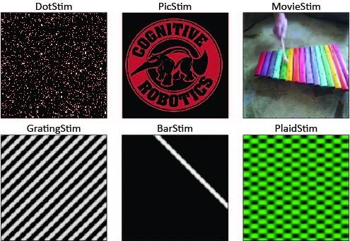

A lightweight Matlab toolbox for generating, storing, and plotting 2D visual stimuli related to vision and neuroscience research such as sinusoidal gratings, plaids, random dot fields, and noise.
View the Project on GitHub UCI-CARL/VisualStimulusToolbox
VisualStimulusToolbox provides a free set of MATLAB functions for vision and neuroscience research. The toolbox allows for the easy creation, manipulation, plotting, and storing of visual stimuli such as drifting sinusoidal gratings, drifting plaids, drifting bars, random dot clouds, as well as their combinations. Every stimulus can be plotted, recorded to AVI, and stored to binary.
The toolbox is a lightweight alternative to the more comprehensive Psychophysics toolbox.
VisualStimulusToolbox was originally created to provide an easy way to important visual stimuli to the CARLsim spiking network simulator. As of CARLsim 3.0, it is straightforward to convert VisualStimulus .dat files to spike trains that can serve as input to CARLsim simulations. However, the toolbox can be used independently.
You can view and manage installed add-ons in MATLAB R2016a using the Add-On Manager. To open the Add-On Manager, go to the Home tab, and select Add-Ons > Manage Add-Ons.
In older MATLAB versions (before R2015b), simply add the directory VisualStimulus/VisualStimulusToolbox to your MATLAB path, and you are good to go.
VisualStimulusToolbox provides a number of classes for creating, plotting, and storing visual stimuli such as:
A stimulus is intantiated by passing the desired stimulus [height, width] to the constructor:
>> dot = DotStim([120 160])
DotStim with properties:
width: 160
height: 120
channels: 1
length: 0
stim: []
supportedNoiseTypes: {'gaussian','localvar', 'poisson',
'salt & pepper', 'speckle'}
Frames can then be added using the method add, by specifying drift direction (in degrees) and speed (in pixels/frame) as well as some other stimulus-specific options (e.g., dot density, dot coherence, dot size, etc.):
>> numFrames = 10;
>> dotSpeed = 1;
>> for dirDeg=(0:7)*45
dot.add(numFrames, dirDeg, dotSpeed);
end
>> dot.plot;
This will create a stimulus made of a total of 80 frames, where dots drift into one of eight directions (in 45 degree increments) for 10 frames each.
During plotting, key events can be used to pause, stop, and step through the frames.
>> rawData4D = dot.stim;
A stimulus can also be converted to an AVI movie or stored as a binary file (see below).
Every stimulus type also comes with a number of handy helper methods:
Every stimulus type can be converted to an AVI movie using the record method by specifying a desired file name and frame rate:
>> dot.record('myMovie.avi', 10); % 10 frames per second
Every stimulus type can be stored to a binary file, which can be loaded at a later point:
>> dot.save('myBinaryStim.dat');
>> newDot = DotStim;
>> newDot.load('myBinaryStim.dat');
Make sure the two stimuli are the same:
>> assert(all(oldStim(:) == newDot.stim(:)))
Some of this code is based on scripts initially authored by Timothy Saint (saint at ncs dot nyu dot edu) and Eero P. Simoncelli (eero dot simoncelli at nyu dot edu) at NYU.
These scripts were released as part of the Motion Energy model in 2005, which was released without stating any software license restrictions. Their contributions are attributed at relevant places in the source code.